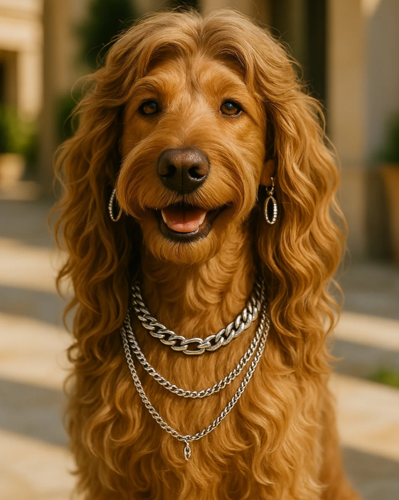
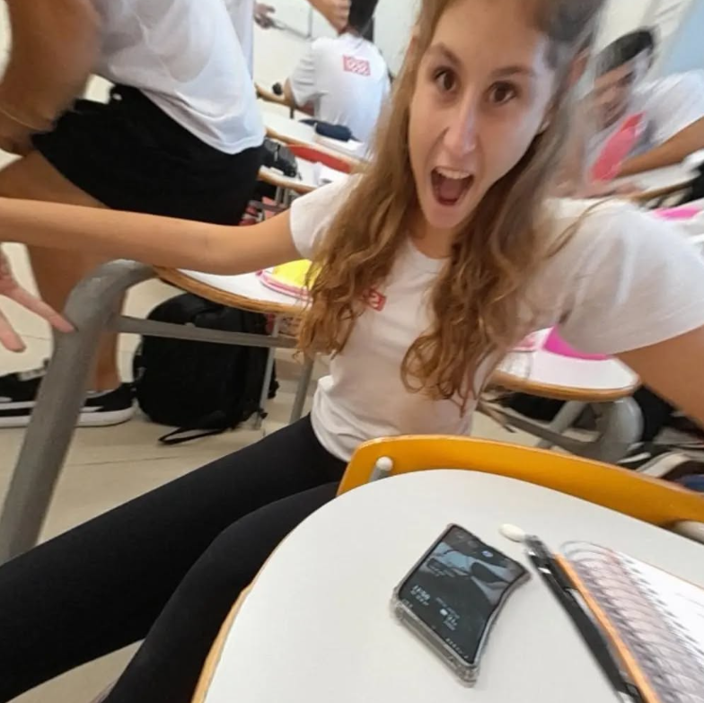
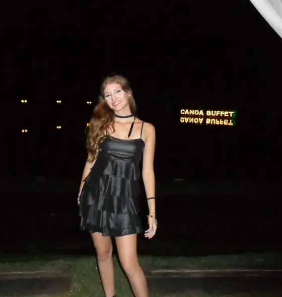

A minha digníssima visão de Luiza
Bem - vindo a meus pensamentos!
Este site irá te ajudar a ter uma breve impressão da menina incrível que essa menina é!
Conheça nossa Luizão

Há muito oque dizer sobre essa menina que representa uma das amizades mais fiéis e companheiras da minha vida, em menos de dois anos já era possivel de imaginar uma vida inteira com essa amizade

Queria que vc soubesse que por mais que no começo não fossemos tão amigas esperei muito pelo dia que poderiamos estar no mesmo grupo, e fico empolgada em finalmente dizer que tenho o melhos grupo de amigas que uma escola poderia me dar
Luiza não apenas isso ela também é um mar de altas surpresas onde em um dia aleatório ela pode começar a rir do nada e convencer todos em volta a participarem disso...
luizão muitas vezes se mostra uma pessoa indecente por mais que muito engraçada tem dias que ela e as famosas frases desnecessárias dão a mão, mas ainda sim todos riem!
A cor favorita dela é rosa e suas flores favoritas são lírios, ela adora passar tempo com os avós e gasta longos períodos de tempo jogando pelo vôlei de amparo, luiza adora se dedicar em suas incríveis postagens no inta, por isso sou fan n1.
Luiza sempre foi uma pessoa que pode se contar em qualquer dia e qualquer hora e isso sempre foi gratificante para mim porque seus conselhos por mais que difíceis sempre foram úteis e essa é a sua qualidade favorita

Obrigada por ser essa loira burra de sempre, eu amo vc demais Luh ❤️!